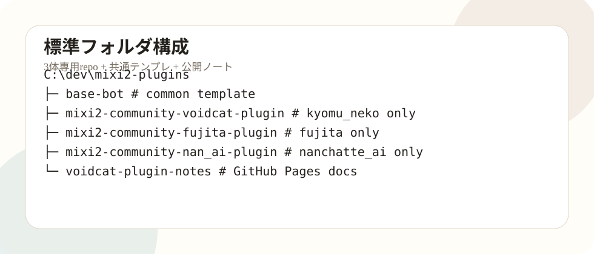

今回の更新概要
今回の更新では、虚無猫、シベリア・フジタ、空想アイの3体Pluginを同じ構成に揃えました。虚無猫だけが base-bot フォルダ名のまま残っていたため、GitHub remoteとしてはVoidcat用なのに、ローカル上では共通テンプレなのか本番repoなのか分かりにくい状態でした。
作業後は、虚無猫も mixi2-community-voidcat-plugin へ整理し、3体とも「専用repo・専用persona・専用assets」の形に統一しました。base-bot は本番用ではなく、共通テンプレとして再定義しています。

今日行った主な作業
- 虚無猫を
mixi2-community-voidcat-pluginとして専用repo化。 - Voidcat repoから不要な
personas/base、personas/fujita、personas/nanchatte_ai、不要assetsを削除。 base-botを共通テンプレとして復元し、Railway本番では使わない扱いに変更。- フジタ、空想アイ、虚無猫の3repoが
main...origin/mainで揃っていることを確認。 - Config UI一発起動batとデスクトップショートカットを作成。
- batの文字化けを回避するためASCII版に修正。
- ブラウザ自動起動を
Start-Processで安定化。 - RailwayでVoidcatのSecret空欄問題を確認。
- RailwayでフジタだけVolume表示がない問題を確認。
- docsを、最新記事、基本構造解説、作業記録、機能一覧、コンフィグ項目一覧、必要サービス、オリジナルbot化手順へ再構成。
標準化後の現在地
| 対象 | 現在の扱い | 状態 |
|---|---|---|
base-bot | 共通テンプレ。Gitなしでもよい。本番Railwayには使わない。 | 復元済み。 |
mixi2-community-voidcat-plugin | 虚無猫本番repo。 | 専用化、commit、push済み。 |
mixi2-community-fujita-plugin | シベリア・フジタ本番repo。 | 同期済み。 |
mixi2-community-nan_ai-plugin | 空想アイ本番repo。 | 同期済み。 |
voidcat-plugin-notes | 公開記事repo。 | docs再構成中。 |
残確認
コードとGitHubは整理済みでも、Railwayは別確認が必要です。SecretsとVolumeはRailway側の設定なので、repoをpushしても自動で直りません。
- Voidcatの
MIXI2_CLIENT_SECRETとOPENAI_API_KEYが空欄ではないこと。 - フジタに
/dataVolumeが付いていること。 - 3体のRailway Deployがsuccessfulであること。
- ログにmissing env、OpenAI key missing、PermissionDenied、panicが出ていないこと。